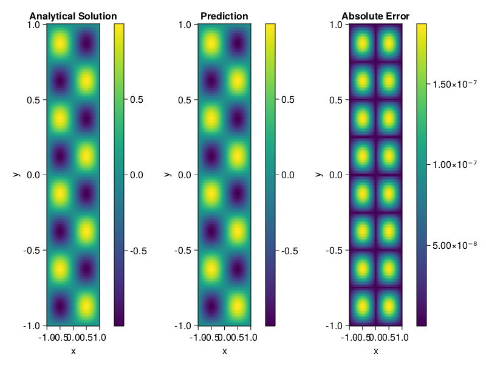

Helmholtz equation
Let us consider the Helmholtz equation in two space dimensions
\[\begin{aligned} &\Delta u(x, y)+k^{2} u(x, y)=q(x, y), \quad(x, y) \in \Omega:=(-1,1)^2 \\ &u(x, y)=0, \quad(x, y) \in \partial \Omega \end{aligned}\]
where
\[q(x, y)=-\left(a_{1} \pi\right)^{2} \sin \left(a_{1} \pi x\right) \sin \left(a_{2} \pi y\right)-\left(a_{2} \pi\right)^{2} \sin \left(a_{1} \pi x\right) \sin \left(a_{2} \pi y\right)+k^{2} \sin \left(a_{1} \pi x\right) \sin \left(a_{2} \pi y\right).\]
The excat solution is $u(x,y)=\sin{a_1\pi x}\sin{a_2\pi y}$. We chose $k=1, a_1 = 1$ and $a_2 = 4$.
using ModelingToolkit, IntervalSets, Sophon, Lux
using Optimization, OptimizationOptimJL
@parameters x,y
@variables u(..)
Dxx = Differential(x)^2
Dyy = Differential(y)^2
a1 = 1
a2 = 4
k = 1
q(x,y) = -(a1*π)^2 * sin(a1*π*x) * sin(a2*π*y) - (a2*π)^2 * sin(a1*π*x) * sin(a2*π*y) + k^2 * sin(a1*π*x) * sin(a2*π*y)
eq = Dxx(u(x,y)) + Dyy(u(x,y)) + k^2 * u(x,y) ~ q(x,y)
domains = [x ∈ Interval(-1,1), y ∈ Interval(-1,1)]
bcs = [u(-1,y) ~ 0, u(1,y) ~ 0, u(x, -1) ~ 0, u(x, 1) ~ 0]
@named helmholtz = PDESystem(eq, bcs, domains, [x,y], [u(x,y)])\[ \begin{align} \frac{\mathrm{d}}{\mathrm{d}y} \frac{\mathrm{d}}{\mathrm{d}y} u\left( x, y \right) + \frac{\mathrm{d}}{\mathrm{d}x} \frac{\mathrm{d}}{\mathrm{d}x} u\left( x, y \right) + u\left( x, y \right) =& - 166.78 \sin\left( 3.1416 x \right) \sin\left( 12.566 y \right) \end{align} \]
Note that the boundary conditions are compatible with periocity, which allows us to apply BACON.
chain = BACON(2, 1, 5, 2; hidden_dims = 32, num_layers=5)
pinn = PINN(chain) # call `gpu` on it if you want to use gpu
sampler = QuasiRandomSampler(300, 100)
strategy = NonAdaptiveTraining()
prob = Sophon.discretize(helmholtz, pinn, sampler, strategy)
@time res = Optimization.solve(prob, BFGS(); maxiters=1000)u: ComponentVector{Float64}(filters = (filter_1 = (bias = [-0.4192433479800428; 0.5792646503297803; … ; -0.6218522671740854; -0.3733963904109692;;]), filter_2 = (bias = [-0.5069651290124937; -0.6828085942892689; … ; -0.23666169622316222; 0.9354484551258662;;]), filter_3 = (bias = [-0.3561817526647009; 0.3890236746971167; … ; -0.8590173689731206; 0.33365595389107744;;]), filter_4 = (bias = [0.6440598344389218; -0.32657234162276205; … ; 0.33896991087835104; 0.49867966623116516;;]), filter_5 = (bias = [0.2655280123226406; -0.45716896606943946; … ; 0.5834602661491639; 0.06835383499503188;;])), linear_layers = (layer_1 = (weight = [-0.036705640326679695 -0.20094099517626232 … 0.330754689200996 0.2785018081122557; -0.3502941053395444 0.14830474298468327 … -0.0023332821452925166 0.182654310077303; … ; -0.039102959141346816 0.3600468139492777 … -0.22645380487070044 0.07379186607227234; 0.07942636452798044 0.1985573862489889 … -0.4322015579737193 0.1601283143949943], bias = [0.029438198835148695; -0.034216562282868; … ; 0.0562917212766953; -0.009303704436669523;;]), layer_2 = (weight = [-0.3462770013521716 -0.07994865934500099 … -0.14906522873974432 0.15771511328298435; 0.17167409685609614 -0.06457179406547853 … -0.19634815155961766 -0.22808136668315263; … ; -0.1511615608424974 0.14060347852607014 … -0.01091141734463941 -0.05641555327315478; 0.036666357301122644 0.022781571602991886 … 0.4162865788893714 -0.03822422359200176], bias = [-0.024397736614953702; 0.01921424974347848; … ; -0.003071959942423273; -0.011650248124710374;;]), layer_3 = (weight = [-0.08562175351661658 0.3670939875093496 … -0.23667739995089496 -0.16994986417020314; -0.06010980073530535 0.38875225558358945 … -0.0196440783408532 0.3296868290630114; … ; 0.07814132165000795 -0.3659694966062912 … -0.03412621563847083 -0.2728008797606467; 0.2475773601743276 0.16017994734423618 … 0.3172773582411485 0.10618439009910426], bias = [-0.00284098285225042; -0.006638170789431882; … ; -0.00490052059794387; 0.03321791904382327;;]), layer_4 = (weight = [-0.3359407410024537 0.43618933926296144 … 0.3038592012676216 0.16708633835269285; -0.40089064373497973 -0.3009323335760407 … -0.16698019450710427 0.14166401140764065; … ; -0.35737196129991355 -0.33840185417331897 … -0.06323358316198047 -0.24969627686929602; 0.42814893455683634 -0.38386145476341826 … 0.20376441556162977 -0.3071478044575426], bias = [0.013935415187862229; 0.000353233972315246; … ; -0.0005260586624835778; 0.027565676988321883;;])), output_layer = (weight = [0.1569465974817615 -0.3467491696648951 … -0.2418032706280592 0.26860903505709327], bias = [0.0002143486907727351;;]))Let's plot the result.
phi = pinn.phi
xs, ys= [infimum(d.domain):0.01:supremum(d.domain) for d in domains]
u_analytic(x,y) = sinpi(a1*x)*sinpi(a2*y)
u_real = [u_analytic(x,y) for x in xs, y in ys]
phi_cpu = cpu(phi) # in case you are using GPU
ps_cpu = cpu(res.u)
u_pred = [sum(phi_cpu(([x,y]), ps_cpu)) for x in xs, y in ys]
using CairoMakie
axis = (xlabel="x", ylabel="y", title="Analytical Solution")
fig, ax1, hm1 = heatmap(xs, ys, u_real, axis=axis)
Colorbar(fig[:, end+1], hm1)
ax2, hm2= heatmap(fig[1, end+1], xs, ys, u_pred, axis= merge(axis, (;title = "Prediction")))
Colorbar(fig[:, end+1], hm2)
ax3, hm3 = heatmap(fig[1, end+1], xs, ys, abs.(u_pred-u_real), axis= merge(axis, (;title = "Absolute Error")))
Colorbar(fig[:, end+1], hm3)
fig